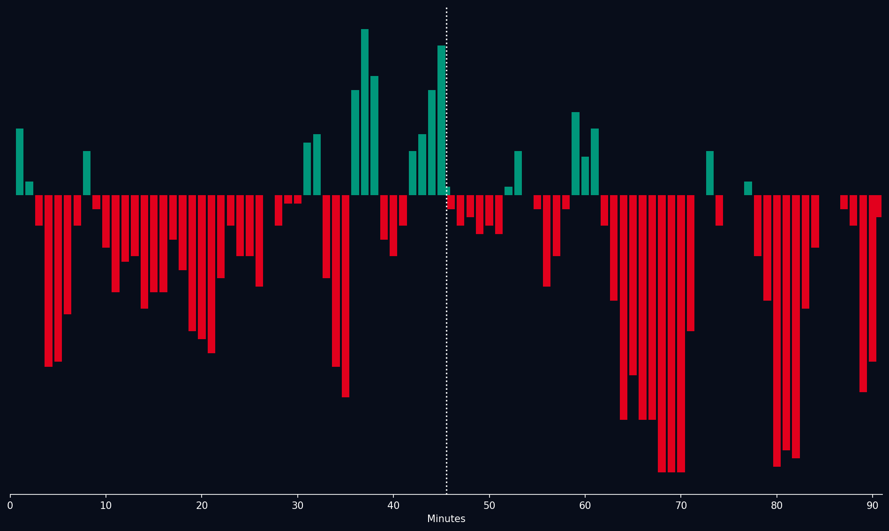

📝 Crónica y Análisis Posterior (Post-Partido)
❌ PREDICCIÓN FALLIDA
⚽ Resumen del Partido (Resultado Real: Jordania 1 - 2 Argelia)
Argelia dio un paso gigantesco hacia la clasificación tras imponerse por 2-1 ante una combativa selección de Jordania. El conjunto jordano salió con todo y sorprendió mediante transiciones rapidísimas por la banda derecha, abriendo el marcador tras un error de la zaga argelina. Sin embargo, Argelia impuso su jerarquía táctica y física a partir del segundo tiempo. Con una destacada actuación de sus mediocampistas y desequilibrio por los extremos, lograron dar vuelta el marcador en el último tercio del partido. Jordania intentó empujar al final mediante balones frontales, pero la solidez defensiva argelina neutralizó cualquier peligro y selló la victoria para los "Fennecs".
🔮 Impacto en el Grupo J y Proyecciones para la Ronda 3
- Ajuste del Algoritmo: Argelia suma 4 puntos en el Grupo J y se coloca en la segunda posición. Su expectativa de gol (xG) y efectividad en fase ofensiva muestran un crecimiento en el modelo Poisson.
- Proyección de la Tercera Ronda de Grupos:
- Argentina vs Jordania: Jordania buscará el milagro de clasificar como uno de los mejores terceros, pero tiene un panorama muy complicado. Se proyecta una victoria cómoda de Argentina con un 74% de probabilidad.
- Argelia vs Austria: Duelo clave por la clasificación. Argelia parte como ligera favorita con un 42% de probabilidad de triunfo, debiendo consolidar su mediocampo para frenar las transiciones austriacas.
📈 Análisis del Match Momentum
Jordania tuvo el control en los primeros compases y se adelantó temprano, reflejado en un pico de Match Momentum de 71.0 de intensidad. No obstante, Argelia ajustó tácticamente y dominó a partir del minuto 35'. La intensidad ofensiva de Argelia creció sostenidamente en la segunda mitad, alcanzando su pico máximo de 84.0 en el minuto 78' al concretar el gol de la victoria. La superioridad colectiva y el fondo físico argelino inclinaron definitivamente la balanza y se reflejan fielmente en el marcador de 2-1.
Gráfico: Match Momentum (Intensidad de Ataque)

🇯🇴 Jordânia: Análisis Táctico
Ventajas
- Alta Intensificación del Juego en la Mediana: Jordânia tendrá una capacidad excepcional para dominar la posesión y la presión alta, aprovechando la sinergía inherente al talento de sus mediapoles. La inclinación hacia un juego de control del balón, con frecuentes combinaciones desde el centro y laterales, limitará la capacidad de Argelia para crear oportunidades en espacios abiertos. Los jugadores como Musa (en defensa) y Ben Abdi (traslado al ataque) serán vitales en este proceso.
- Uso Estratégico del "Triángulo" Vertical: El uso inteligente de las líneas de presión, especialmente a través del triángulo vertical, permitirá que la presión alta en el mediocampo no solo desvíe la posesión a favor de ellos, sino también forzar deficiencias de balón en el área defensiva de Argelia. Esta táctica es particularmente efectiva contra equipos con una estructura defensivamente robusta.
- Efectividad de las Transiciones: Jordânia se beneficiará enormemente al superar rápidamente los retrasos iniciales gracias a la dinámica y rapidez de sus sprints laterales, particularmente David (en ataque). Una correcta incorporación a las líneas se asegura el control del juego y anticipación de cualquier posible error de Argelia.
- El Desafío Defensivo: Estrategia "Defensa de Círculos": La capacidad de Jordanía para construir un escudo y defender en cercos es inmensamente peligrosa. La estructura defensiva de Argelia, si se enfrenta la presión alta, será inevitablemente forzando movimientos agresivos. Además, el juego rápido en general de Jordânia permitirá la frustación de posibles ataques ofensivas contra el mediocampo.
Desventajas
- Dependencia Excesiva del Traslado del Presioen al Medio: Si bien las ventajas tácticas mencionadas anteriormente son cruciales, una concentración excesiva en el centro y laterales puede expujar a Jordânia hacia un juego estático, atrayendo a Argelia a jugarse el balón. Esta dependencia podría ser explotada con astucia.
- Vulnerabilidad al Ataque del Centro (si es muy eficiente): La efectividad del mediocampo de Jordanía se está convirtiendo en una fuente potente de oportunidades y defensa contra el ataque del centro si Argelia logra recuperar la posesión rápidamente, aprovechando las deficiencias en los desplazamientos entre líneas.
- Facilidad para Superar la Presión en Transición: Un error incontrolable en la transición puede dejar a Jordânia con un solo defensor en el mediocampo, y ser rápidamente superado por los zancos de Argelia que intentan forzar errores o atrincherados.
- Defensos Bien Formados y Positivos: La calidad del centro y laterales de Argelia pueden contrastar, poniendo a prueba las defensores de Jordanía y obligándolos a tomar decisiones difíciles cuando los espacios se presentan.
🇩🇿 Argelia: Análisis Táctico
Ventajas
- Solidez de la Estructura Defensiva: Argelia no es un equipo que busque crear oportunidades en los primeros diez minutos, sino que prioriza defender y dificultar el ataque de Jordânia. La dedicación a mantener el control del balón y la organización defensiva son claves.
- Fuerza Individual Impactante: La combinación de velocidad y capacidad de pase y conducción del equipo tendrá un impacto significativo en todo lo que haga. El atacante más importante es Zidine (en ataque), con gran potencial para romper líneas defensivas de Jordanía.
- Resiliencia al Juego Lateral: Argelia está construida sobre la posibilidad de tener contraataques, al tener una disposición defensiva fuerte, es probable que tengan buenos jugadores en el mediocampo con capacidad de salida
- Posicionamiento de los Atacantes de los Bandos: Al crear espacios y atragantando a las líneas defensivas de Jordânia es importante que la estructura del equipo se centre a partir ahí. Los laterales son esenciales para generar problemas y ayudar a la defensa contra el ataque de Jordania en su conjunto.
Desventajas
- Deficiencias en la Transiciones: El equipo puede enfrentarse dificultades al reanudar el control después de una situación de desventaja. Su dependencia de la presión alta del mediocampio podría hacerlos vulnerables ante un despliegue ofensivo rápido de Jordânia.
- Abundancia de Defensas Relevantes: Argelia necesita ser capaz de generar presión en los laterales y en el centro donde las debilidades se hacen explícitas para ganar los balones por todos lados.
- Falta de Creatividad Trasera: Una estructura defensivamente sólida no es suficiente, una organización de juego que no tenga creatividad trasera puede frustrar la defensa o llevarla al desastre. Las posiciones pueden ser un problema.
- Sobrecarga del Mediocampo: A pesar de tener defensores importantes en el mediocampio a veces se vuelve difícil cubrir sus defectos porque hay demasiados jugadores.
⚖️ Comparativa y Veredicto
El duelo táctico fue sumamente disputado y físico. Jordania sorprendió inicialmente con un planteamiento vertical y transiciones veloces que rompieron el bloque defensivo de Argelia. Sin embargo, los ajustes tácticos realizados por el cuerpo técnico argelino en el entretiempo dieron sus frutos: adelantaron sus líneas e incrementaron la presión sobre la salida de balón jordana.
La jerarquía individual en ataque de Argelia terminó por marcar la diferencia ante un cansado equipo de Jordania. El 2-1 final premia la capacidad de reacción y resiliencia táctica del conjunto argelino, que supo revertir la adversidad mediante un juego más asociativo y directo en la segunda mitad.
📊 Pizarras y Gráficos Tácticos
 Argelia
Argelia